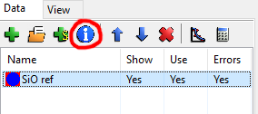

ORSO Integration¶
Introduction¶
The Open Reflectometry Standards Organization (ORSO) has defined file types for reflectometry that allow standardized header information to be reat programmatically. GenX integrates these capabilities when exporting the simulated data (). The text format *.ort allows to export all datasets into a single file and includes the GenX model, parameters and script. This makes it the perfect format to submit as supplement for publications, as the metadata makes it easier to replicate and check the results.
Note
The ORSO export only works, if the header information is confirm with the standard.
Metadata Dialog¶
GenX keeps track of metadata from imported measurements. Depending on the data loader, different amount of information is available. You can browse through the metadata using the Data panel, selecting one dataset and clicking the information button:
This will open the Dataset information dialog with a hirachical structure on the left and text display on the right hand side. When opening the SiO layer neutron example, you can see such structure:

This can be quite useful in reviewing some instrument parameters or finding the sample a certain measurement corresponds to.
It is possible to edit the leaf notes directly by double-click. A right click on a parent node allows to insert new items accoring to ORSO specification.
New Model from File¶
For a proper ORSO datafile it is possible to create a new reflectivity model, making use of existing information from the header. For this use the menu .
By default this defines the instrument parameters (neutron/x-ray etc.). If a model according to the ORSO model language has been provided by the user, GenX will already use the information to buid the sample.
If this options is used to with a *.ort file exported by GenX, the model is directly loaded and parameters arc configured accoring to the specification.
Exported Fit¶
When exporting data for publication using the ORSO format, a typical header would look like this. In addition to all header data from the imported measurement, GenX adds the analysis section. It includes not only the fit script but all fit parameters, uncertainties as well as a model accoring to the ORSO model language.
(In this example, a full statistical analysis accoring to Error Statistics from bumps library was performed.)
# ORSO reflectivity data file | 1.1 standard | YAML encoding | https://www.reflectometry.org/
data_source:
owner:
name: GenX
affiliation: Paul Scherrer Institut
experiment:
title: Example
instrument: SuperAdam
start_date: null
probe: neutron
sample:
name: SiO on Si
measurement:
instrument_settings:
incident_angle: {min: 0.01, max: 4.2, unit: deg}
wavelength: {magnitude: 4.4, unit: angstrom}
polarization: unpolarized
data_files: []
file_name: for_import.ort
reduction:
software: {name: null}
data_set: SiO ref
analysis:
software:
name: GenX
version: 3.6.26
model:
stack: ambient | surf | substrate
origin: GenX model
sub_stacks:
surf:
repetitions: 1
stack: SiO
layers:
SiO:
thickness: 1212.22800714822
roughness: 4.306906302304505
material:
sld: {real: 4.2969154511952156e-07, imag: 0.0}
materials:
ambient:
sld: {real: 0.0, imag: 0.0}
substrate:
sld: {real: 2.0583957958990535e-07, imag: 0.0}
globals:
roughness: {magnitude: 0.3, unit: nm}
length_unit: angstrom
mass_density_unit: g/cm^3
number_density_unit: 1/nm^3
sld_unit: 1/angstrom^2
magnetic_moment_unit: muB
script: "import models.spec_nx as model\nfrom models.utils import UserVars, fp,\
\ fw, bc, bw\nfrom numpy import *\n\n# BEGIN Instrument DO NOT CHANGE\nfrom models.utils\
\ import create_fp, create_fw\ninst = model.Instrument(probe='neutron', wavelength=4.4,\
\ coords='q', I0=14.998640637081689, res=0.001, restype='full conv and varying\
\ res.', respoints=9, resintrange=3, beamw=1.361494002150504, footype='gauss beam',\
\ samplelen=50.0, incangle=0.0, pol='uu', Ibkg=3.9351064727954855e-06, tthoff=0.0,)\n\
inst_fp = create_fp(inst.wavelength); inst_fw = create_fw(inst.wavelength)\n\n\
fp.set_wavelength(inst.wavelength); fw.set_wavelength(inst.wavelength)\n# END\
\ Instrument\n\n# BEGIN Sample DO NOT CHANGE\nAmb = model.Layer(sigma=0.0, dens=1.0,\
\ d=0.0, f=(1e-20+1e-20j), b=0, xs_ai=0.0, magn=0.0, magn_ang=0.0)\nSiO = model.Layer(sigma=2,\
\ dens=0.026, d=1205, f=(1e-20+1e-20j), b=bc.Si + bc.O*2, xs_ai=0.0, magn=0.0,\
\ magn_ang=0.0)\nSub = model.Layer(sigma=2, dens=8/5.443**3, d=0.0, f=(1e-20+1e-20j),\
\ b=bc.Si, xs_ai=0.0, magn=0.0, magn_ang=0.0)\n\nsurf = model.Stack(Layers=[SiO],\
\ Repetitions = 1)\n\nsample = model.Sample(Stacks = [surf], Ambient = Amb, Substrate\
\ = Sub)\n# END Sample\n\n# BEGIN Parameters DO NOT CHANGE\ncp = UserVars()\n\
cp.new_var('dtheta', 0.04)\ncp.new_var('dlol', 0.007)\ncp.new_sys_err('tth0',\
\ 0.0, 0.0035)\n# END Parameters\n\nSLD = []\ndef Sim(data):\n I = []\n \
\ SLD[:] = []\n # BEGIN Dataset 0 DO NOT CHANGE\n inst.setTthoff(cp.getTth0())\n\
\ inst.setRes(sqrt((cp.dlol*data[0].x)**2 + (4*3.1415/4.4*cp.dtheta*pi/360)**2))\n\
\ d = data[0]\n I.append(sample.SimSpecular(d.x, inst))\n if _sim: SLD.append(sample.SimSLD(None,
\ None, inst))\n # END Dataset 0\n return I"
parameters:
- Parameter: SiO.setD
Value: 1212.22800714822
Fit: true
Min: 903.75
Max: 1506.25
Error: (-4.222e-01, 4.558e-01)
- Parameter: SiO.setB
Value: 16.52659788921237
Fit: true
Min: 11.816324999999999
Max: 19.693875
Error: (-5.753e-02, 5.761e-02)
- Parameter: SiO.setSigma
Value: 4.306906302304505
Fit: true
Min: 1.5
Max: 15.0
Error: (-1.975e-01, 3.629e-01)
- Parameter: Sub.setSigma
Value: 4.563155140343594
Fit: true
Min: 1.5
Max: 15.0
Error: (-1.311e+00, 7.008e-01)
- Parameter: inst.setI0
Value: 5.8056171439193776
Fit: false
Min: 1.5
Max: 15.0
Error: '-'
- Parameter: inst.setIbkg
Value: 2.1398201626854554e-06
Fit: false
Min: 0.0
Max: 1.0e-05
Error: '-'
- Parameter: cp.setTth0
Value: -0.00014253852631751873
Fit: false
Min: -0.05
Max: 0.05
Error: '-'
- Parameter: inst.setBeamw
Value: 0.6
Fit: false
Min: 0.15000000000000002
Max: 1.5
Error: '-'
- Parameter: cp.setDlol
Value: 0.005
Fit: false
Min: 0.004
Max: 0.008
Error: '-'
- Parameter: cp.setDtheta
Value: 0.033
Fit: false
Min: 0.03
Max: 0.05
Error: '-'
statistics_mcmc:
library: bumps
version: 0.9.3
settings:
pop: 8
burn: 200
samples: 100000
parameters:
- name: SiO_B
value: 16.52659788921237
error: 0.05757321442536423
cross_correlations:
SiO_B: 0.003169740268471557
SiO_D: 0.0039037691554475317
SiO_Sigma: 0.0010288173799339142
Sub_Sigma: 0.013075369118058998
- name: SiO_D
value: 1212.22800714822
error: 0.43902018031155876
cross_correlations:
SiO_B: 0.0039037691554475317
SiO_D: 0.18902683733024617
SiO_Sigma: 0.006523187144176223
Sub_Sigma: 0.001940201735574769
- name: SiO_Sigma
value: 4.306906302304505
error: 0.28023314693246926
cross_correlations:
SiO_B: 0.001028817379933914
SiO_D: 0.006523187144176223
SiO_Sigma: 0.06652948247714746
Sub_Sigma: -0.19488424544167524
- name: Sub_Sigma
value: 4.563155140343594
error: 1.0059575457738956
cross_correlations:
SiO_B: 0.013075369118058998
SiO_D: 0.001940201735574769
SiO_Sigma: -0.19488424544167524
Sub_Sigma: 0.7994400246403878
operator:
name: glavic_a
timestamp: '2024-07-23T14:56:01'
columns:
- {name: Qz, unit: 1/angstrom}
- {name: R}
- {error_of: R}
- {name: Rsim}
- {name: FOM}